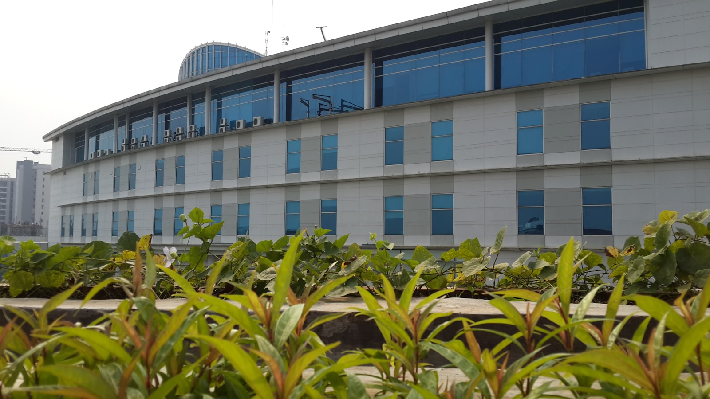

Selamat Datang — Welcome
The 2023 AISINDO Symposium brings together accounting information systems scholars, digital transformation researchers, and industry practitioners across Indonesia and Southeast Asia. Hosted by the Department of Information Systems at Institut Teknologi Sepuluh Nopember (ITS) in Surabaya, the symposium provides an open forum for foundational and applied work on AIS, enterprise digitalization, audit analytics, and the socio-technical aspects of emerging-economy digital transformation.
Dates
Venue
Proceedings
Auspices
About the Symposium
AISINDO Symposium 2023 is the annual scholarly meeting of the Indonesian information systems research community working at the intersection of accounting, audit, ERP, and the digital transformation of organisations in emerging economies. The symposium emphasises rigorous research grounded in regional context — from family-owned manufacturers in East Java to fintech startups in Jakarta, from public-sector e-government initiatives to plantation-economy supply chains.
This year's edition is organised in partnership with the Department of Information Systems at ITS Surabaya, one of Indonesia's leading technological universities, with peer-reviewed proceedings published in CEUR Workshop Proceedings (CEUR-WS.org).
Topics of Interest
- Accounting Information Systems (AIS) design, adoption, and use
- ERP implementation in emerging-economy enterprises
- Continuous auditing, audit analytics, and assurance technologies
- Digital transformation strategy in SMEs and family firms
- Blockchain, distributed ledgers, and triple-entry accounting
- Financial reporting automation and XBRL adoption
- Cybersecurity and internal controls in digital AIS
- Behavioural and socio-technical perspectives on AIS
- Public-sector financial information systems and e-government
- Sustainability, ESG reporting, and integrated information systems
Keynote Speakers
Host Institution
The Department of Information Systems at the Institut Teknologi Sepuluh Nopember (ITS) in Surabaya hosts AISINDO Symposium 2023. Founded in 1957 and located in East Java, ITS is one of Indonesia's four institutes of technology and a leading national centre for IS research. The Department of Information Systems contributes long-standing programmes in enterprise systems, business analytics, and IS governance.
